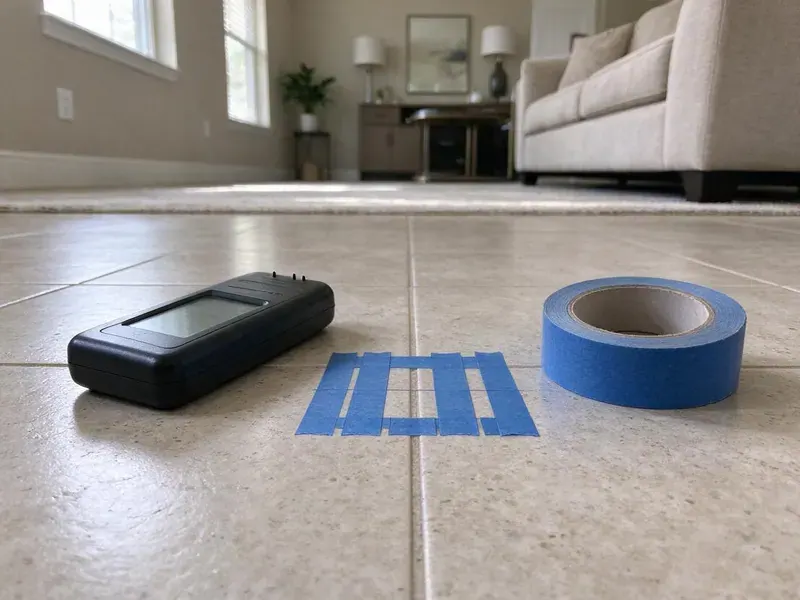

New Construction Plumbing in Highlands Ranch, CO
We give builders and owner-builders in Highlands Ranch, CO clear bids and clean layouts, with plumbing that passes inspection the first time.
- Fast Bids From Your Plans
- PEX-A Supply and PVC Drains
- Licensed and Insured Contractor
- Code Compliant Work

Get Your New Build Plumbed Right the First Time in Highlands Ranch, CO.
We handle every phase from underground to trim, so you deal with one plumber.
New Construction Plumbing for Highlands Ranch, CO Properties
GFR Plumbing plumbs new homes and additions in Highlands Ranch, CO, starting with the underground drain lines before the slab is poured. Then come top-out and trim. Every stub-out is set from the approved plans and the cabinet shop drawings. A missed stub-out costs a day of rework.
Some of what we do:
- Rough-in plumbing for new homes and light commercial work.
- Stub-outs for every fixture and appliance on the plan.
- Tank and tankless water heater installs.

Additional Plumbing Maintenance Services in Highlands Ranch, CO
Our maintenance and specialty plumbing services in Highlands Ranch, CO protect your home year-round and extend the life of every system.


Customers
Why Choose GFR Plumbing for New Construction Plumbing in Highlands Ranch, CO?
Cheap rough-ins get expensive later. A drain run at less than a quarter inch per foot will pass a quick look and then clog for the life of the house. We shoot grade with a level on every horizontal run. Where a pipe runs closer than 1-1/4 inches to the stud face, it gets a steel nail plate.
- Timely Completion, We coordinate with framers and electricians so plumbing never holds up the next trade.
- Clean Coordination, Rough-in and trim dates are set to match the framing and drywall calendar.
- Code Current, We track Colorado and local code updates and plumb to the edition your inspector enforces.
Citywide Coverage
We plumb new builds in every part of Highlands Ranch, from tight infill lots near the center to tract homes on the outskirts. Infill lots bring surprises. An existing sewer lateral might be clay, sit shallower than the plans assume, or connect to the main in a spot nobody marked, so we locate it before setting the building drain elevation.
Experienced Team
Each new construction plumber we send is licensed and insured. We carry general liability and workers' comp and send the certificates to your office before the first day on site. Your lender may ask for them. Owner-builders often forget this step until the lender asks, and having the paperwork ready keeps a draw from being held up for a week.
Safety-First Approach
Code compliance gets checked by us before the inspector sees it. Drain slope, vent sizing and trap arm length are checked against code tables. Then we test. Drains hold water to the top fitting, and supply piping holds pressure long enough to show a weak crimp.
Trusted Certified Highlands Ranch Plumbing Services Professionals
At GFR Plumbing, we take pride in licensed, certified plumbing services throughout Highlands Ranch, CO. Credentials matter in this trade. Our plumbers hold recognized industry credentials, and they follow strict safety and quality rules on every repair, installation and maintenance call we run.
Call Us Now PHCC Plumbing Contractor Recognition
PHCC Plumbing Contractor Recognition Better Business Bureau (BBB) Accreditation
Better Business Bureau (BBB) Accreditation Angi Certified Pro
Angi Certified Pro ISO 9001 Quality Management Certification
ISO 9001 Quality Management CertificationInspection-Ready New Construction Plumbing in Highlands Ranch, CO
Fixture Installation and Finishing in Highlands Ranch, CO
Final trim is the visible part, so we take our time with it. Caulk lines matter here. Toilets go down level and tight to the floor, faucets get set before the backsplash where we can, and every supply line gets checked for leaks after an hour of use. We call final once every fixture is set and running.

Residential New Construction Plumbing in Highlands Ranch
Layout drives cost on a house. Grouping the kitchen, laundry and baths along one wet wall can cut a few hundred feet of pipe out of a plan. We point out those savings during plan review. Moving a toilet on paper is free, and moving it after the pour means a saw and a jackhammer.
Light Commercial Plumbing for New Construction in Highlands Ranch, CO
Retail suites and offices usually need ADA restroom layouts, a mop sink and a backflow preventer on the domestic line. We set carrier fittings for wall-hung fixtures and rough in at the heights the accessibility standard requires. Backflow testers certify the assembly. The test report is in hand before your occupancy inspection.
New Construction Plumbing Cost Planning in Highlands Ranch, CO
Plumbing for a typical new single-family home often runs about 4 to 8 percent of total build cost, depending on fixture count and finish level. Each added bathroom moves the number more than anything else. Fixtures are the wild card. Labor is the same for a basic faucet and a high-end one, while the part price can differ by hundreds per sink.
Commercial and Multifamily New Construction in Highlands Ranch
Small commercial buildouts and multifamily projects usually come with engineered plans and a backflow test. Restaurants need a grease interceptor too. On multifamily we stack wet walls floor to floor and use listed firestop systems where pipes pass through rated assemblies. Inspectors look at firestopping during rough.
Gas Piping for New Homes in Highlands Ranch
We size gas piping for ranges, water heaters, furnaces and fireplaces, plus pool heaters and outdoor kitchens. A shutoff valve goes in within six feet of each appliance. Drip legs go at the furnace and water heater, and the system holds test pressure before the utility sets the meter. The test runs at least ten minutes.
Water Heater Installation for New Builds in Highlands Ranch
Picking the water heater during design saves a gas line reroute later. A 50-gallon tank covers most three-bedroom homes. Larger homes with soaking tubs or multiple showers often go tankless, which needs a bigger gas line, often 3/4-inch or more, and a dedicated vent path. Expansion tanks and drain pans go in where code requires.

Sewer and Water Main Connections in Highlands Ranch, CO
Tying a new house to the city water main and sewer involves a tap fee and an inspection by the utility. Expansive clay soils are a well-known problem in parts of Colorado, swelling with moisture and heaving slabs, basement floors, and buried pipes. Plastic water services get tracer wire in the trench so a locator can find them years from now. The meter setter comes first. Pressure gets checked at the hose bib, and a pressure-reducing valve goes in if the street side runs above 80 psi.
New Construction Plumbing Near Me in Highlands Ranch, CO
Being local matters on a new build in Highlands Ranch because inspectors and utility rules differ from one jurisdiction to the next. Some want a cleanout at the property line. Others require a specific backflow assembly on irrigation or a set burial depth for the water service, and knowing that ahead of time keeps the first inspection from failing. Those go into our layout from the start.
Local builders send us repeat work because our underground crews show up on the day we booked. No-shows cost builders money. Most of our new construction calls come from supers we have worked with before. They know we test before we call the inspector and leave the site clean, which is less common in this trade than it should be.
GFR Plumbing at a Glance
- Licensed and insured plumbers serving Highlands Ranch, CO
- 24/7 emergency service with same-day scheduling
- Clear written estimates, no hidden fees
- 4.8-star rated by 750+ Colorado customers
Highlands Ranch Map
Highlands Ranch Information
- Population
- 103,444
- Area codes
- 303/720/970
- Service area
- Highlands Ranch and towns within a 40 mile drive
- Nearby
- Centennial, Parker, Castle Rock, Lakewood
New construction plumbing in Highlands Ranch, CO has to match the local weather. Higher elevations lower the boiling point of water, which affects water heater settings and pressure relief performance in mountain homes. Pipe material and burial depth get chosen around it.
Expert Services
Call GFR Plumbing for reliable plumbing work done by licensed pros in Highlands Ranch, CO.
Our Specialized Plumbing Services in Highlands Ranch, CO
At GFR Plumbing, we handle the full list of plumbing services across Highlands Ranch, CO. From leak detection to full system installs, our team works fast and charges fair prices on homes and commercial properties alike. Explore our core services below:


Our New Construction Plumbing Phases in Highlands Ranch, CO
Building a new home takes coordination. Here is how GFR Plumbing handles the plumbing side.
Request a Quote
Call (720) 727-9398 or send your plans and fixture schedule. We return an itemized bid by phase.
Phase Scheduling
We set dates for each phase to match your pour and framing dates. You get one point of contact.
Install, Test and Trim
Our crew installs each phase, tests it and meets the inspector. Final trim ends with every fixture set and tested.
Frequently Asked Questions About New Construction Plumbing in Highlands Ranch
Bathroom count drives the cost more than square footage does. A slab home is often a little cheaper to plumb than a basement home, because basement drains may need an ejector pump and the layout uses more vertical pipe. We price gas piping as its own line. Ask us for a number after we see your plans, since square-foot estimates miss too much to be useful.
It matters more than most owners expect. Corrections need a fast return trip. A plumber based an hour away may not come back until next week to add a missing strap, which can hold up your insulation inspection and every trade after it.
Yes, new construction plumbing in Highlands Ranch, CO always needs a permit and inspections. Plumbing usually rides on the main building permit, though some places issue a separate one to the plumber. We handle our side of it.
Most jurisdictions inspect plumbing three times. The underground inspection happens before the slab is poured, with drains under a water or air test. The rough or top-out inspection happens before insulation and drywall, and the final comes once fixtures are set, the water heater is running and the gas is tested. Some add a gas test.
PEX handles most water supply in new homes. It bends around corners and needs far fewer fittings inside walls than copper does. For drain, waste and vent we use Schedule 40 PVC or ABS, whichever your code and plans call for. Copper still shows up at water heaters.
In many homes, yes. Around Highlands Ranch, a yearly water heater flush helps clear the sediment that collects at the bottom of the tank. A softener loop costs a few hundred dollars during rough-in and much more to retrofit after drywall, since the plumber has to open walls or run pipe through the garage ceiling. We cap it if you are not ready.
Expansive clay soils are a well-known problem in parts of Colorado, swelling with moisture and lifting slabs, basement floors, and buried pipes. Soil movement works on any pipe buried under concrete. Our crews bed drains in sand or gravel, sleeve pipes through the slab and run PEX water services where permitted. Sleeves are cheap.
PEX-A is our default for water supply in Colorado homes. It tolerates hot water and avoids the pinhole leaks copper can develop in some water. We run drains in Schedule 40 PVC. Under slabs, we keep joints to a minimum and use long-sweep fittings at every change of direction so a cable or camera can get through later.
What People Are Saying About Our Plumbing Experts?

Karen W.
After our third pinhole leak in copper, we stopped patching. GFR Plumbing gave us a written plan room by room and repiped the house in PEX while we stayed in it. The crew covered our floors every morning and cleaned up every night.
Repiping · Denver, CO
Marcus H.
Grease from the fryer line kept clogging the kitchen drain at my diner. GFR Plumbing hydro jetted the line after closing, showed me the buildup on camera, and set us up on a quarterly cleaning so it does not catch us on a Friday again.
Drain Cleaning · Castle Rock, CO
Laura S.
Our 40 gallon tank started leaking from the bottom after thirteen years. The tech hauled the old one out, set a new unit with a fresh expansion tank, and had hot water running in about four hours. He took the old tank with him too.
Water Heater Replacement · Denver, CO
Nathan E.
Our tankless heater kept throwing an error code and shutting off mid shower. The tech flushed the heat exchanger, which was full of scale, and replaced a bad flow sensor. Hot water has been steady for half a year now.
Water Heater Repair · Aurora, CO
Emily R.
The shutoff valve under our kitchen sink snapped off in my hand on a Sunday morning. GFR Plumbing had someone out by early afternoon. He replaced both angle stops with quarter turn valves and showed me where our main shutoff was, which I honestly did not know.
Plumbing Repair · Parker, COKevin O.
Before buying our house I paid for a sewer camera inspection. GFR Plumbing found a belly in the line that held standing water about forty feet from the cleanout. We used the video to get the sellers to fix it before closing.
Sewer Camera Inspection · Parker, CO